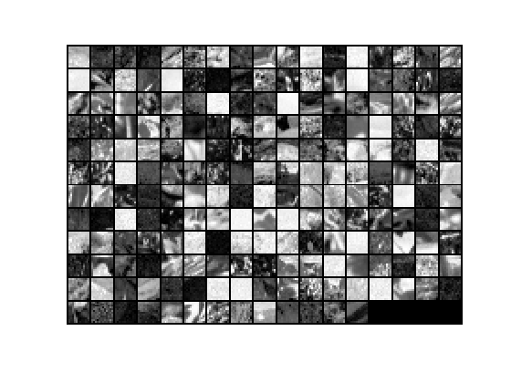
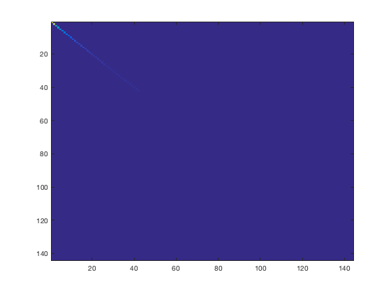
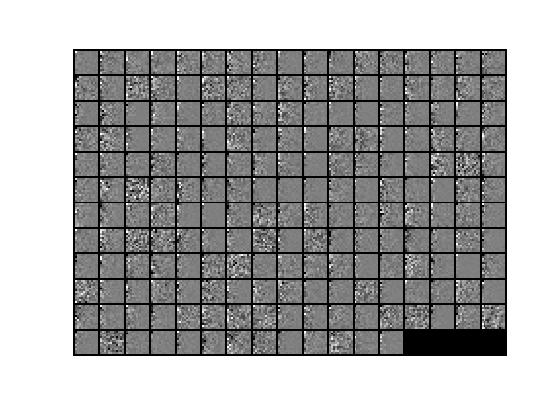
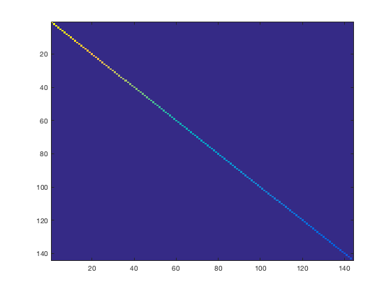
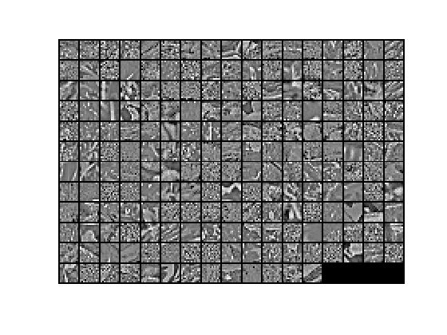

Contents
Step 0a: Load data
Here we provide the code to load natural image data into x.
x will be a 144 * 10000 matrix, where the kth column x(:, k) corresponds to
the raw image data from the kth 12x12 image patch sampled.
You do not need to change the code below.
close all
x = sampleIMAGESRAW();
figure('name','Raw images');
randsel = randi(size(x,2),200,1);
display_network(x(:,randsel));

Step 0b: Zero-mean the data (by row)
You can make use of the mean and repmat/bsxfun functions.
x = x - repmat(mean(x,1), size(x,1),1);
Step 1a: Implement PCA to obtain xRot
Implement PCA to obtain xRot, the matrix in which the data is expressed
with respect to the eigenbasis of sigma, which is the matrix U.
xRot = zeros(size(x));
sigma = x * x' / size(x, 2);
[U,S,V] = svd(sigma);
xRot(:,:) = U' * x;
Step 1b: Check your implementation of PCA
The covariance matrix for the data expressed with respect to the basis U
should be a diagonal matrix with non-zero entries only along the main
diagonal. We will verify this here.
Write code to compute the covariance matrix, covar.
When visualised as an image, you should see a straight line across the
diagonal (non-zero entries) against a blue background (zero entries).
covar = zeros(size(x, 1));
covar(:,:) = cov(xRot');
figure('name','Visualisation of covariance matrix');
imagesc(covar);

Step 2: Find k, the number of components to retain
Write code to determine k, the number of components to retain in order
to retain at least 99% of the variance.
k = 144;
sqrt_k = sqrt(k);
variance_original = var(x,1);
variance_k = variance_original;
perc = min(variance_original ./ variance_k);
while sqrt_k > 0
sqrt_k = sqrt_k - 1;
xTilde = U(:,1:sqrt_k)' * x;
variance_k = var(xTilde,1);
perc = min(variance_original ./ variance_k);
fprintf('Variance ratio for %d is %f\n', sqrt_k ^ 2, perc);
if perc < .99
k = (sqrt_k + 1) ^ 2;
break;
end
end
Variance ratio for 121 is 0.078062
Step 3: Implement PCA with dimension reduction
Now that you have found k, you can reduce the dimension of the data by
discarding the remaining dimensions. In this way, you can represent the
data in k dimensions instead of the original 144, which will save you
computational time when running learning algorithms on the reduced
representation.
Following the dimension reduction, invert the PCA transformation to produce
the matrix xHat, the dimension-reduced data with respect to the original basis.
Visualise the data and compare it to the raw data. You will observe that
there is little loss due to throwing away the principal components that
correspond to dimensions with low variation.
xHat = U(:,1:k)' * x;
figure('name',['PCA processed images ',sprintf('(%d / %d dimensions)', k, size(x, 1)),'']);
display_network(xHat(:,randsel));
figure('name','Raw images');
display_network(x(:,randsel));


Step 4a: Implement PCA with whitening and regularisation
Implement PCA with whitening and regularisation to produce the matrix
xPCAWhite.
epsilon = 0.1;
xPCAWhite = zeros(size(x));
xPCAWhite(:,:) = diag(1./sqrt(diag(S) + epsilon)) * U' * x;
Step 4b: Check your implementation of PCA whitening
Check your implementation of PCA whitening with and without regularisation.
PCA whitening without regularisation results a covariance matrix
that is equal to the identity matrix. PCA whitening with regularisation
results in a covariance matrix with diagonal entries starting close to
1 and gradually becoming smaller. We will verify these properties here.
Write code to compute the covariance matrix, covar.
Without regularisation (set epsilon to 0 or close to 0),
when visualised as an image, you should see a red line across the
diagonal (one entries) against a blue background (zero entries).
With regularisation, you should see a red line that slowly turns
blue across the diagonal, corresponding to the one entries slowly
becoming smaller.
covar(:,:) = cov(xPCAWhite');
figure('name','Visualisation of covariance matrix');
imagesc(covar);

Step 5: Implement ZCA whitening
Now implement ZCA whitening to produce the matrix xZCAWhite.
Visualise the data and compare it to the raw data. You should observe
that whitening results in, among other things, enhanced edges.
epsilon = 0.1;
xZCAWhite = zeros(size(x));
xZCAWhite = U * diag(1./sqrt(diag(S) + epsilon)) * U' * x;
figure('name','ZCA whitened images');
display_network(xZCAWhite(:,randsel));
figure('name','Raw images');
display_network(x(:,randsel));
